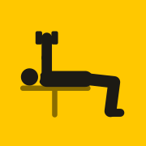
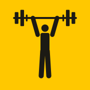
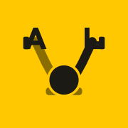
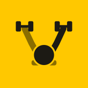
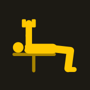
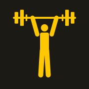
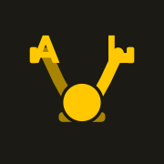
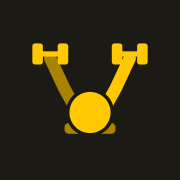

YELLOW GROUND / 180 px, then 60 px
 round 1 C (current favorite)
round 1 C (current favorite) concept-c-yellow.svg
concept-c-yellow.svg
concept-d-yellow.svgconcept-d-yellow.svg
concept-e-yellow.svg concept-e-yellow.svg
concept-e-yellow.svg
concept-f-yellow.svgconcept-f-yellow.svg
concept-f2-yellow.svgconcept-f2-yellow.svgconcept-g-yellow.svgconcept-g-yellow.svgINK GROUND / 180 px, then 60 px

concept-d-ink.svgconcept-d-ink.svg
concept-e-ink.svgconcept-e-ink.svg
concept-f-ink.svgconcept-f-ink.svg
concept-f2-ink.svgconcept-f2-ink.svgconcept-g-ink.svgconcept-g-ink.svg